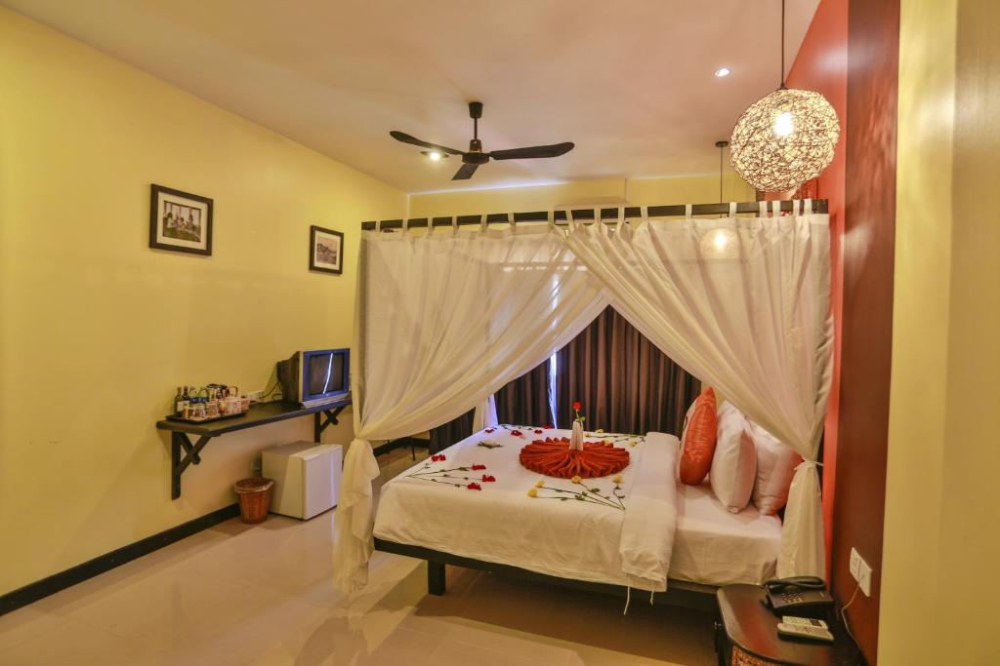
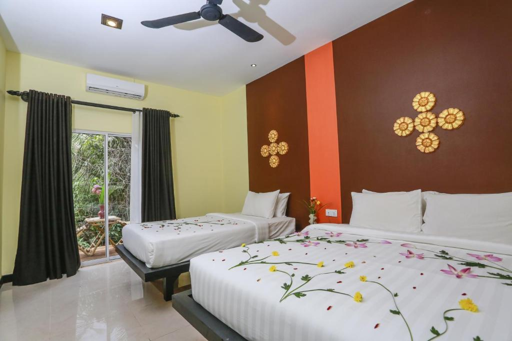
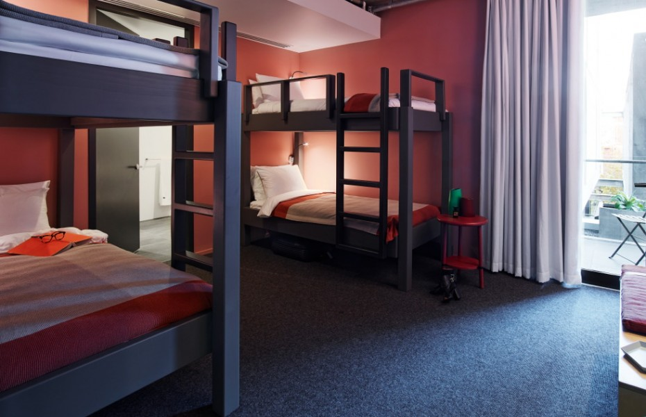

|  |
Este quarto duplo dispõe de varanda, ar-condicionado, quarto com cama de casal, banheiro e tv, além de mini cozinha com cooktop duas bocas e frigobar. Disponibilizamos roupa de cama e de banho, além de utensílios básicos como pratos, copos, dias com troca de toalhas, roupa de cama, retirada do lixo e limpeza do apartamento. |
R$230,00 |
|  |
Este quarto triplo dispõe de varanda, ar-condicionado, quarto com cama de casal, banheiro, sala com sofá cama de solteiro e tv, além de mini cozinha com cooktop duas bocas e frigobar. Disponibilizamos roupa de cama e de banho, além de utensílios básicos como pratos, copos, xícaras, talheres e panelas. O serviço de quarto é realizado a cada três dias com troca de toalhas, roupa de cama, retirada do lixo e limpeza do apartamento. |
R$270,00 |
|  |
Esta cabine quádrupla dispõe de varanda, ar-condicionado, dois quartos com cama de casal, banheiro, sala com sofá cama de solteiro e tv, além de mini cozinha com cooktop duas bocas e frigobar. Disponibilizamos roupa de cama e de banho, além de utensílios básicos como pratos, copos, xícaras, talheres e panelas. O serviço de quarto é realizado a cada três dias com troca de toalhas, roupa de cama, retirada do lixo e limpeza do apartamento. |
R$300,00 |